In this notebook we provide an introduction to the frugal parameterization for Bayesian causal inference, developed in the paper “Parameterizing and simulating from causal models”, (Evans & Didelez, 2024). We illustrate the concepts with a simple example using synthetic data and an explicit PyMC implementation.
The authors of the frugal parameterization (Evans & Didelez, 2024) have implemented an R package called causl that allows you to specify, simulate from and fit causal models using the frugal parameterization.
Motivation
Bayesian causal inference typically proceeds as follows:
- Specify a full generative model for the joint distribution of treatment, outcome, and confounders using conditional distributions.
- Fit the model using MCMC or variational inference.
- Derive the causal estimand (e.g., the Average Treatment Effect) as a function of the posterior over model parameters.
For example, consider a simple setting with a confounder \(Z\), a binary treatment \(X\), and a continuous outcome \(Y\). The causal graph is:
import graphviz as gr
g = gr.Digraph(comment="Causal Graph")
g.node("Z", "Z (Confounder)")
g.node("X", "X (Treatment)")
g.node("Y", "Y (Outcome)")
g.edge("Z", "X")
g.edge("Z", "Y")
g.edge("X", "Y")
g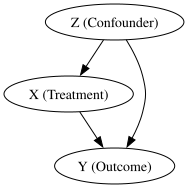
The standard Bayesian model would be:
\[ Z \sim \text{Normal}(0, 1) \] \[ X \mid Z \sim \text{Bernoulli}\!\left(\text{logit}^{-1}(\alpha_0 + \alpha_1 Z)\right) \] \[ Y \mid X, Z \sim \text{Normal}(\beta_0 + \beta_1 X + \beta_2 Z, \, \sigma^2) \]
The Average Treatment Effect (ATE) is:
\[ \text{ATE} = \mathbb{E}[Y \mid \text{do}(X=1)] - \mathbb{E}[Y \mid \text{do}(X=0)] \]
In this linear model, the ATE happens to equal \(\beta_1\). But this is a coincidence of the linear specification. In general, with non-linear models, interactions, or non-Gaussian outcomes, the ATE is a complex function of all model parameters.
This creates three practical problems:
Problem 1: You can’t put a prior directly on the causal effect. Your priors go on regression coefficients (\(\beta_0, \beta_1, \beta_2\)), not on the quantity you actually care about. If a domain expert says “we believe this treatment reduces the outcome by 10–20%”, translating that into priors on regression coefficients is awkward and indirect, especially in non-linear models.
Problem 2: Simulation with known causal effects is difficult. If you want to generate synthetic data where the true ATE has a specific value (for benchmarking, power analysis, or sensitivity analysis), you can’t just set it. You have to reverse-engineer which conditional parameters would produce the desired marginal causal effect. As Havercroft & Didelez (2012) showed, this is surprisingly hard even in seemingly simple longitudinal settings.
Problem 3: Likelihood-based inference on marginal causal quantities is indirect. The causal estimand is a marginal quantity of the interventional distribution, but the data comes from the observational distribution. You fit the full conditional model and then post-process the posterior. This is inefficient and can be numerically unstable.
The Frugal Parameterization
Core idea
Evans & Didelez (2024) propose to flip the parameterization: instead of starting with conditional distributions and deriving the causal effect, start with the causal effect and build the rest of the joint distribution around it.
The joint observational distribution \(P(Z, X, Y)\) is decomposed into three variation-independent components:
| Component | What it represents | What you specify |
|---|---|---|
| (a) “The past” | \(P(Z, X)\) | Confounder distribution + propensity model |
| (b) Causal margin | \(P^*(Y \mid \text{do}(X))\) | Interventional outcome distribution |
| (c) Dependence | Association between \(Y\) and \(Z\) beyond \(X\) | Copula or odds ratio |
(Evans & Didelez call component (b) the causal kernel \(p^*_{Y \mid X}\); we use “causal margin” as a shorthand throughout this post, but it is the same object, a conditional distribution of \(Y\) given a value of \(X\) set by intervention.)
The term “frugal” refers to the fact that this parameterization uses exactly the parameters needed, no more, no less, with the causal quantity of interest at the center. More precisely, following Definition 2.1 in Evans & Didelez (2024), a parameterization of the joint distribution \(P(Z, X, Y)\) is frugal with respect to the causal kernel \(P^*(Y \mid X)\) if it consists of three components
- A parameterization of the past \(P(Z, X)\)
- The interventional kernel \(P^*(Y \mid X)\)
- A conditional association measure \(\varphi^*_{YZ \mid X}\)
that are jointly sufficient to determine the full observational distribution and are variation independent (we will explain what this means below) of each other. There is nothing redundant (each component controls a distinct aspect of the joint distribution) and nothing missing (the three together fully determine \(P(Z, X, Y)\)).
In the standard parameterization, causal and non-causal information is tangled: \(\beta_1\) encodes the causal effect, but \(\beta_2\) and \(\sigma\) jointly encode both the confounding structure and the residual variation in a way that is not separable. The frugal parameterization disentangles these by placing the causal effect \(\delta\) in its own component (b), the confounding association \(\rho\) in component (c), and the treatment assignment mechanism in component (a).
Why “variation independent”?
Variation independence means that the parameter space of the full model is the Cartesian product of the parameter spaces of the three components. In other words, any value of the causal effect \(\delta\) is compatible with any value of the copula correlation \(\rho\) and any values of the propensity parameters \((\alpha_0, \alpha_1)\). No choice of one component restricts the feasible values of the others.
To see why this is non-trivial, consider the standard parameterization. The standard parameters \((\alpha_0, \alpha_1, \beta_0, \beta_1, \beta_2, \sigma)\) are themselves variation independent among each other, so the issue is not internal to that set. The issue shows up when you try to place the causal/dependence quantities alongside them as joint free parameters. Suppose you fix the observational pair \(\sigma = 1\) and \(\beta_2 = 0.7\). Then, as we derive below, the implied causal quantities are completely pinned down by \(\sigma_c = \sqrt{\sigma^2 + \beta_2^2} \approx 1.22\) and \(\rho = \beta_2 / \sigma_c \approx 0.573\). So once you’ve specified \((\sigma, \beta_2)\) in the standard parameterization, you have no remaining freedom to choose the causal standard deviation or the copula correlation, they are determined, not free parameters. In the frugal parameterization, the roles are reversed: \((\sigma_c, \rho)\) are the primitive free parameters that you can vary independently, and \((\sigma, \beta_2)\) are derived quantities computed from them. You can pick one set or the other as primitives, but you cannot treat both sets as jointly free, and that asymmetry is exactly what variation independence of the frugal components buys you.
The Bayesian consequence. Because the parameter spaces factor as a Cartesian product, a product prior \(p(\theta_{\text{past}}) \times p(\theta_{\text{causal}}) \times p(\theta_{\text{dependence}})\) is always a valid joint prior, there are no hidden constraints that could make certain prior combinations inadmissible. The discussion contribution of Steiner & Steel (2024) emphasizes exactly this Bayesian consequence: you can put an informative prior on the causal effect \(\delta\) (e.g., from a pilot experiment) without that prior implicitly constraining the propensity model or the dependence structure, and vice versa.
Background: What is a copula?
When building a joint distribution of two (or more) random variables, you need to specify two things: (a) the marginal distributions (what each variable looks like on its own) and (b) the dependence structure (how they co-vary). A copula is a mathematical device that handles (b) separately from (a), letting you mix and match different marginals with different dependence structures.
Sklar’s theorem (1959) makes this precise: any joint distribution \(F(y, z)\) of continuous random variables can be written as
\[ F(y, z) = C\!\left(F_Y(y), \, F_Z(z)\right) \]
where \(F_Y\) and \(F_Z\) are the marginal CDFs and \(C: [0,1]^2 \to [0,1]\) is a copula function. Conversely, for any choice of marginals \(F_Y, F_Z\) and any copula \(C\), this formula produces a valid joint distribution. The copula \(C\) captures all of the dependence structure, completely separated from the marginals.
The Gaussian copula is constructed as follows: (i) transform each variable to its uniform quantile via the probability integral transform: \(u = F_Y(y)\), \(v = F_Z(z)\); (ii) map these uniforms to standard normals: \(\tilde{y} = \Phi^{-1}(u)\), \(\tilde{z} = \Phi^{-1}(v)\); (iii) model the dependence between \(\tilde{y}\) and \(\tilde{z}\) as a bivariate normal with correlation \(\rho\). When the marginals are themselves Gaussian, steps (i)–(ii) reduce to standardization, and the Gaussian copula with correlation \(\rho\) produces a bivariate normal. This is why, in the Gaussian-Gaussian case used later in this post to illustrate these concepts, the joint interventional distribution of \((Y^*, Z)\) is simply a bivariate normal.
Code References: The PyMC documentation has a detailed tutorial on copulas: Bayesian copula estimation: Describing correlated joint distributions. For a more visual introduction, see Thomas Wiecki’s blog post An intuitive, visual guide to copulas.
Why copulas matter for the frugal parameterization: In the frugal decomposition, the dependence component (c) needs to “couple” the interventional outcome \(Y^*\) with the confounder \(Z\) while keeping the causal margin (b) and the past (a) untouched. The copula is the natural tool for this: you can specify the causal margin \(P^*(Y \mid \text{do}(X))\) and the confounder distribution \(P(Z)\) as marginals, then use a copula to model their dependence, all independently. Under mild regularity (positive conditionals and smooth, regular parameterizations), Proposition 2.5 in Evans & Didelez (2024) confirms that the triple (marginals \(P_{Z,X}\), interventional kernel \(P^*_{Y \mid X}\), conditional copula \(C_{YZ \mid X}\)) is a frugal parameterization.
The Gaussian copula case
For continuous outcomes with Gaussian margins, the dependence component (c) can be parameterized using a Gaussian copula with correlation parameter \(\rho\).
Concretely, let:
- \(\mu(x) = \mu_0 + \delta \cdot x\) be the mean of \(Y\) under intervention \(\text{do}(X=x)\)
- \(\sigma_c\) be the standard deviation of \(Y\) under intervention
- \(\rho\) be the Gaussian copula correlation between \(Y\) and \(Z\) given \(X\)
Because both margins are Gaussian here, \(\rho\) coincides with the ordinary Pearson correlation of \((Y^*, Z) \mid \text{do}(X=x)\), there is no separate “copula \(\rho\)” and “Pearson \(\rho\)” to keep track of, they are the same number.
Then the observational conditional distribution \(Y \mid X, Z\) has a closed-form expression:
\[ Y \mid X=x, Z=z \;\sim\; \text{Normal}\!\left( \underbrace{(\mu_0 + \delta \cdot x)}_{\text{causal margin mean}} + \underbrace{\rho \cdot \sigma_c \cdot z}_{\text{copula adjustment}}, \;\; \sigma_c^2 (1 - \rho^2) \right) \]
where we have assumed \(Z\) is standardized (\(\mu_Z = 0, \sigma_Z = 1\)).
Key observation: The parameter \(\delta\) is the ATE. It is now a direct model parameter, not a derived quantity. We can put a prior on it: \(\delta \sim \text{Normal}(0, 4)\) (weakly-informative, i.e. standard deviation \(2\)) or \(\delta \sim \text{Normal}(0.5, 0.01)\) (informative, standard deviation \(0.1\), from a pilot experiment).
The copula correlation \(\rho\) absorbs the confounding association between \(Z\) and \(Y\) that is not mediated by the treatment \(X\). It plays the role that \(\beta_2\) plays in the standard regression, but it is parameterized in terms of the copula rather than a regression coefficient.
After this theoretical discussion, we now implement both parameterizations in PyMC and compare them on synthetic data.
Prepare Notebook
from typing import NamedTuple
import arviz as az
import matplotlib.pyplot as plt
import numpy as np
import pandas as pd
import pymc as pm
import pytensor.tensor as pt
import seaborn as sns
from pymc import do
az.style.use("arviz-darkgrid")
plt.rcParams["figure.figsize"] = [10, 6]
plt.rcParams["figure.dpi"] = 100
plt.rcParams["figure.facecolor"] = "white"
%load_ext autoreload
%autoreload 2
%config InlineBackend.figure_format = "retina"seed: int = sum(map(ord, "frugal_parameterization_pymc"))
rng: np.random.Generator = np.random.default_rng(seed=seed)We generate data from a simple causal model:
- A confounder \(Z \sim \text{Normal}(0, 1)\)
- A treatment \(X \mid Z \sim \text{Bernoulli}(\text{logit}^{-1}(-0.5 + 0.8 Z))\)
- An outcome \(Y \mid X, Z \sim \text{Normal}(1.0 + 0.5 X + 0.7 Z, \, 1)\)
The true ATE is \(\delta = 0.5\).
class SimParams(NamedTuple):
"""Simulation parameters for the causal model."""
n_obs: int
alpha_0: float
alpha_1: float
beta_0: float
beta_1: float
beta_2: float
sigma_y: float
@property
def true_ate(self) -> float:
return self.beta_1
sim_params = SimParams(
n_obs=500,
alpha_0=-0.5,
alpha_1=0.8,
beta_0=1.0,
beta_1=0.5,
beta_2=0.7,
sigma_y=1.0,
)We now generate the synthetic data from a generative model.
coords = {"obs_idx": np.arange(sim_params.n_obs)}
with pm.Model(coords=coords) as generative_model:
_z = pm.Normal("z", 0, 1, dims="obs_idx")
_a0 = pm.Normal("a0", 0, 1)
_a1 = pm.Normal("a1", 0, 1)
_b0 = pm.Normal("b0", 0, 1)
_b1 = pm.Normal("b1", 0, 1)
_b2 = pm.Normal("b2", 0, 1)
_sigma_y = pm.HalfNormal("sigma_y", 1)
_x = pm.Bernoulli("x", p=pm.math.invlogit(_a0 + _a1 * _z), dims="obs_idx")
_mu_y = _b0 + _b1 * _x + _b2 * _z
pm.Normal("y", mu=_mu_y, sigma=_sigma_y, dims="obs_idx")
pm.model_to_graphviz(generative_model)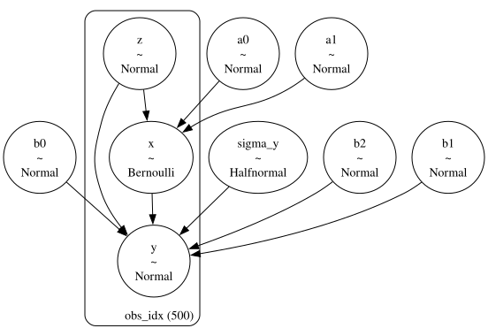
We condition the generative model on the true parameters:
conditioned_generative_model = do(
generative_model,
{
"a0": sim_params.alpha_0,
"a1": sim_params.alpha_1,
"b0": sim_params.beta_0,
"b1": sim_params.beta_1,
"b2": sim_params.beta_2,
"sigma_y": sim_params.sigma_y,
},
)
pm.model_to_graphviz(conditioned_generative_model)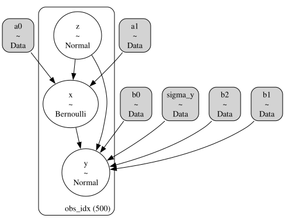
We now sample the prior predictive distribution to extract one sample which will be our synthetic dataset.
with conditioned_generative_model:
prior_samples = pm.sample_prior_predictive(draws=1, random_seed=rng)
z_obs = prior_samples["prior"]["z"].sel(chain=0, draw=0).to_numpy()
x_obs = prior_samples["prior"]["x"].sel(chain=0, draw=0).to_numpy()
y_obs = prior_samples["prior"]["y"].sel(chain=0, draw=0).to_numpy()Sampling: [x, y, z]Let’s visualize the observed data:
g = sns.pairplot(
pd.DataFrame(
{
"z": z_obs,
"x": x_obs,
"y": y_obs,
}
),
hue="x",
height=3,
aspect=1.5,
)
g.figure.suptitle("Observed Data", fontsize=18, fontweight="bold", y=1.05);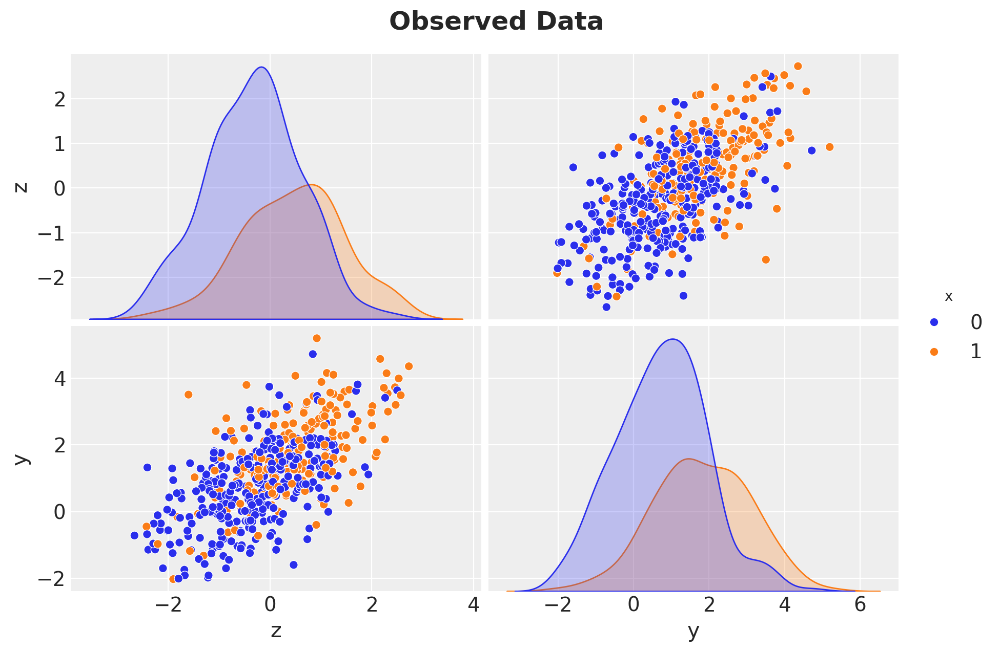
Standard parameterization
This is the conventional Bayesian regression approach. We specify the full conditional model and put priors on the regression coefficients.
with pm.Model(coords=coords) as standard_model:
a0 = pm.Normal("a0", 0, 2)
a1 = pm.Normal("a1", 0, 2)
b0 = pm.Normal("b0", 0, 2)
b1 = pm.Normal("b1", 0, 2) # ATE = b1 (only in the linear case!)
b2 = pm.Normal("b2", 0, 2)
sigma = pm.HalfNormal("sigma", 2)
x_hat = pm.Bernoulli(
"x_hat", p=pm.math.invlogit(a0 + a1 * z_obs), observed=x_obs, dims="obs_idx"
)
mu_y = pm.Deterministic("mu_y", b0 + b1 * x_hat + b2 * z_obs, dims="obs_idx")
pm.Normal("y_hat", mu=mu_y, sigma=sigma, observed=y_obs, dims="obs_idx")
pm.model_to_graphviz(standard_model)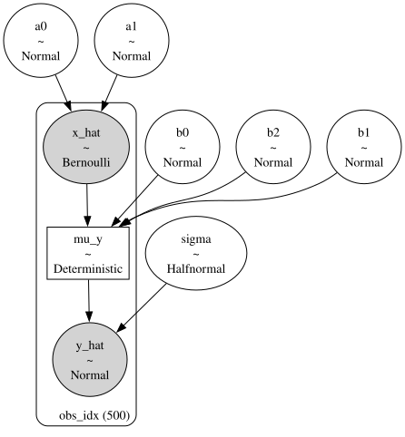
sampler_kwargs = {
"draws": 2_000,
"tune": 1_500,
"chains": 4,
"random_seed": rng,
}
with standard_model:
idata_standard = pm.sample(**sampler_kwargs)az.summary(idata_standard, var_names=["b0", "b1", "b2", "sigma"])| mean | sd | hdi_3% | hdi_97% | mcse_mean | mcse_sd | ess_bulk | ess_tail | r_hat | |
|---|---|---|---|---|---|---|---|---|---|
| b0 | 0.976 | 0.058 | 0.864 | 1.084 | 0.001 | 0.001 | 6693.0 | 6151.0 | 1.0 |
| b1 | 0.497 | 0.099 | 0.312 | 0.685 | 0.001 | 0.001 | 6608.0 | 6280.0 | 1.0 |
| b2 | 0.736 | 0.048 | 0.645 | 0.824 | 0.001 | 0.001 | 7628.0 | 6023.0 | 1.0 |
| sigma | 0.996 | 0.032 | 0.935 | 1.054 | 0.000 | 0.000 | 7671.0 | 5794.0 | 1.0 |
In the standard model, the ATE posterior is simply the posterior of b1. Note that this only works because the model is linear. In a non-linear model, we need to use custom transformations of the posterior parameters, see for example: ATE Estimation with Logistic Regression.
fig, ax = plt.subplots()
az.plot_posterior(idata_standard, var_names=["b1"], ref_val=sim_params.true_ate, ax=ax)
ax.set(xlabel="ate")
ax.set_title(
"Estimated ATE - Standard Parameterization", fontsize=18, fontweight="bold"
);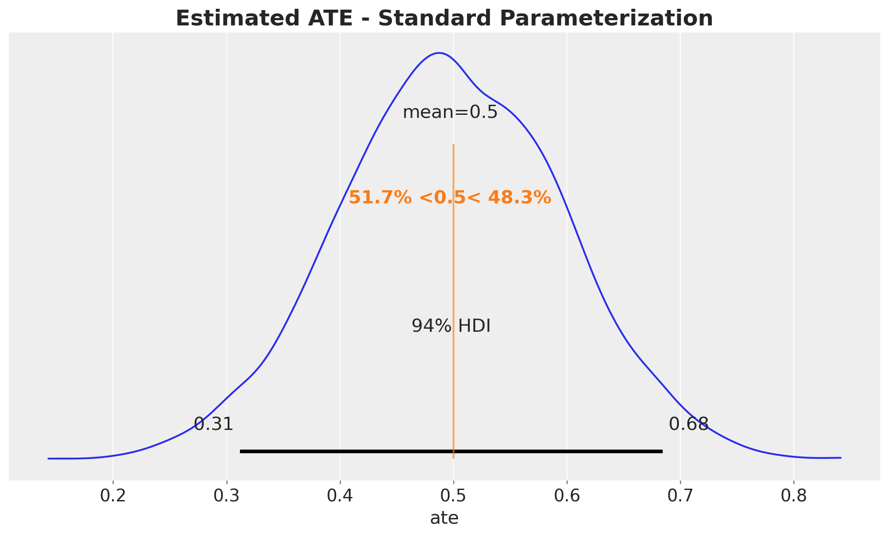
We recover the true ATE around \(0.5\).
Frugal parameterization
Now we implement the frugal parameterization. The model has three blocks:
- The past \(P(Z, X)\): same propensity model as before.
- Causal margin \(P^*(Y \mid \text{do}(X))\): parameterized by \(\mu_0\) (baseline outcome), \(\delta\) (ATE), and \(\sigma_c\) (causal SD).
- Dependence: Gaussian copula correlation \(\rho\) between \(Y\) and \(Z\).
The observational likelihood is:
\[ Y \mid X=x, Z=z \sim \text{Normal}\!\left( (\mu_0 + \delta x) + \rho \sigma_c z, \;\; \sigma_c^2 (1 - \rho^2) \right) \]
with pm.Model(coords=coords) as frugal_model:
# --- (a) The past: propensity model P(X|Z) ---
a0 = pm.Normal("a0", 0, 2)
a1 = pm.Normal("a1", 0, 2)
x_hat = pm.Bernoulli(
"x_hat", p=pm.math.invlogit(a0 + a1 * z_obs), observed=x_obs, dims="obs_idx"
)
# --- (b) Causal margin: P*(Y | do(X)) ---
mu0 = pm.Normal("mu0", 0, 2) # E[Y | do(X=0)]
delta = pm.Normal("delta", 0, 2) # ATE (direct parameter!)
sigma_causal = pm.HalfNormal("sigma_causal", 2)
# --- (c) Dependence: Gaussian copula ---
# bounded away from +/-1 for numerical stability of sqrt(1 - rho**2)
rho = pm.Uniform("rho", -0.95, 0.95)
b2 = pm.Deterministic("b2", rho * sigma_causal)
# --- Observational likelihood ---
mu_y_frugal = pm.Deterministic(
"mu_y_frugal", mu0 + delta * x_hat + rho * sigma_causal * z_obs, dims="obs_idx"
)
sigma_y_frugal = pm.Deterministic(
"sigma_y_frugal",
sigma_causal * pt.sqrt(1 - rho**2),
)
pm.Normal(
"y_hat", mu=mu_y_frugal, sigma=sigma_y_frugal, observed=y_obs, dims="obs_idx"
)
pm.model_to_graphviz(frugal_model)
with frugal_model:
idata_frugal = pm.sample(**sampler_kwargs)az.summary(idata_frugal, var_names=["mu0", "delta", "sigma_causal", "rho"])| mean | sd | hdi_3% | hdi_97% | mcse_mean | mcse_sd | ess_bulk | ess_tail | r_hat | |
|---|---|---|---|---|---|---|---|---|---|
| mu0 | 0.975 | 0.059 | 0.869 | 1.090 | 0.001 | 0.001 | 6742.0 | 6685.0 | 1.0 |
| delta | 0.498 | 0.098 | 0.318 | 0.684 | 0.001 | 0.001 | 6280.0 | 6069.0 | 1.0 |
| sigma_causal | 1.238 | 0.037 | 1.167 | 1.304 | 0.000 | 0.000 | 8196.0 | 6925.0 | 1.0 |
| rho | 0.593 | 0.027 | 0.542 | 0.642 | 0.000 | 0.000 | 7042.0 | 6269.0 | 1.0 |
We now plot the posterior of the ATE based on the frugal parameterization.
fig, ax = plt.subplots()
az.plot_posterior(idata_frugal, var_names=["delta"], ref_val=sim_params.true_ate, ax=ax)
ax.set(xlabel="ate")
ax.set_title("Estimated ATE - Frugal Parameterization", fontsize=18, fontweight="bold");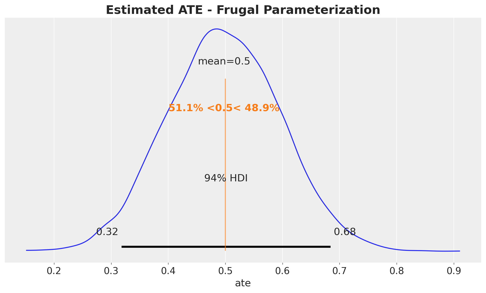
It also recovers the true ATE around \(0.5\).
Comparison
In this linear Gaussian case, the two parameterizations should give essentially the same posterior for the ATE. The point is not that frugal is better here, but that it opens the door to things you can’t easily do with the standard approach.
ax, *_ = az.plot_forest(
[idata_standard, idata_frugal],
model_names=["Standard", "Frugal"],
var_names=["b1", "delta"],
combined=True,
figsize=(7, 5),
)
ax.axvline(sim_params.true_ate, color="black", linestyle="--", lw=2)
ax.set_title("Posterior ATE: Standard vs Frugal", fontsize=18, fontweight="bold");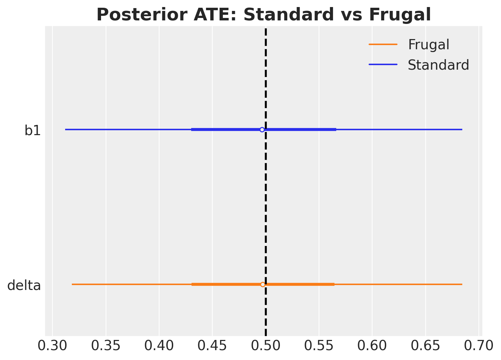
The two posteriors essentially match, as expected in this linear Gaussian case.
The Payoff: Informative Priors on the Causal Effect
The real advantage of the frugal parameterization becomes clear when you have prior knowledge about the causal effect itself, which is extremely common in practice.
Scenario: combining experimental and observational evidence
Imagine you are a data scientist at a company that has:
- A small experiment (e.g., a geo-lift test, a pilot RCT, an A/B test) that gives a noisy estimate of the causal effect: \(\hat{\delta} \approx 0.5 \pm 0.1\).
- A large observational dataset where the treatment was deployed non-randomly and confounding is present.
You want to combine these two sources of information. With the frugal parameterization, this is trivial: put the experimental result as an informative prior on \(\delta\).
With the standard parameterization, you would need to translate “\(\delta \approx 0.5 \pm 0.1\)” into priors on regression coefficients, which is not straightforward, especially if the model is non-linear.
Let’s compare a weakly informative prior \(\delta \sim \text{Normal}(0, 4)\) (standard deviation \(2\)) against an informative prior \(\delta \sim \text{Normal}(0.5, 0.01)\) (standard deviation \(0.1\)) in the frugal model.
with pm.Model(coords=coords) as frugal_informative:
# (a) The past
a0 = pm.Normal("a0", 0, 2)
a1 = pm.Normal("a1", 0, 2)
x_hat = pm.Bernoulli(
"x_hat", p=pm.math.invlogit(a0 + a1 * z_obs), observed=x_obs, dims="obs_idx"
)
# (b) Causal margin with INFORMATIVE prior on ATE
mu0 = pm.Normal("mu0", 0, 2) # E[Y | do(X=0)]
delta = pm.Normal("delta", 0.5, 0.1) # <-- from a pilot experiment
sigma_causal = pm.HalfNormal("sigma_causal", 2)
# --- (c) Dependence: Gaussian copula ---
# bounded away from +/-1 for numerical stability of sqrt(1 - rho**2)
rho = pm.Uniform("rho", -0.95, 0.95)
b2 = pm.Deterministic("b2", rho * sigma_causal)
# --- Observational likelihood ---
mu_y_frugal = pm.Deterministic(
"mu_y_frugal", mu0 + delta * x_hat + rho * sigma_causal * z_obs, dims="obs_idx"
)
sigma_y_frugal = pm.Deterministic(
"sigma_y_frugal",
sigma_causal * pt.sqrt(1 - rho**2),
)
pm.Normal(
"y_hat", mu=mu_y_frugal, sigma=sigma_y_frugal, observed=y_obs, dims="obs_idx"
)
pm.model_to_graphviz(frugal_informative)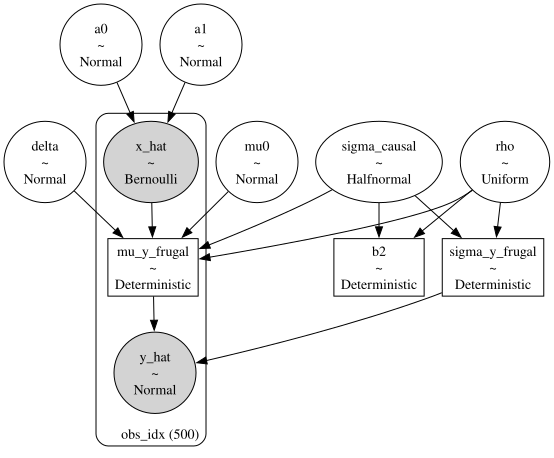
with frugal_informative:
idata_informative = pm.sample_prior_predictive(draws=1_000, random_seed=rng)
idata_informative.extend(pm.sample(**sampler_kwargs))ax, *_ = az.plot_forest(
[
idata_standard.rename({"b1": "ate"}),
idata_frugal.rename({"delta": "ate"}),
idata_informative.rename({"delta": "ate"}),
],
model_names=["Standard", "Frugal", "Frugal (informative)"],
var_names=["ate"],
combined=True,
figsize=(8, 5),
)
ax.axvline(sim_params.true_ate, color="black", linestyle="--", lw=2)
ax.set_title(
"Posterior ATE\nStandard vs Frugal vs Frugal (informative)",
fontsize=18,
fontweight="bold",
y=1.05,
);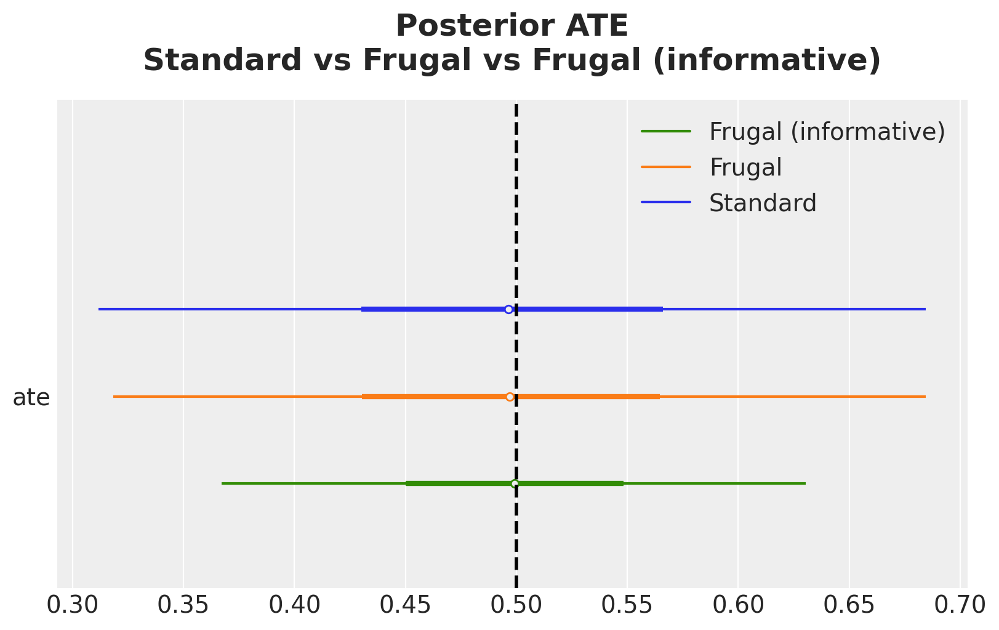
The informative prior sharpens the posterior by increasing the precision of the posterior estimate. This is the Bayesian machinery doing exactly what it should: combining prior knowledge (from the experiment) with new evidence (from the observational data).
axes = az.plot_dist_comparison(
data=idata_informative, var_names=["delta"], figsize=(10, 6)
)
fig = plt.gcf()
fig.suptitle(
"Prior vs Posterior ATE - Informative Prior", fontsize=18, fontweight="bold"
);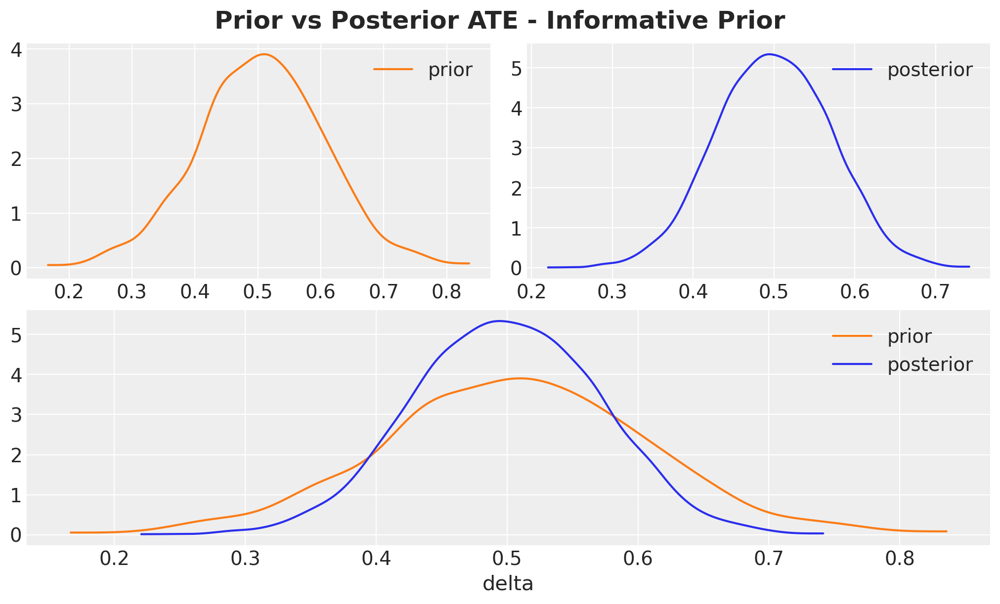
Note that the posterior is not just the prior, the data genuinely updates it.
Inspecting the Copula Dependence Parameter
The copula correlation \(\rho\) captures the association between \(Y\) and \(Z\) in the interventional world. More precisely, \(\rho\) is the Pearson correlation between \(Y^*\) and \(Z\) conditional on \(\text{do}(X=x)\), i.e., the correlation inside the bivariate normal we constructed in Step 1 of the derivation in Appendix. Because the construction is homoscedastic in \(x\), this correlation is the same for every value of \(x\), so it is an unambiguous, single scalar that summarizes the \(Y\)–\(Z\) dependence under intervention. Let’s plot its posterior:
fig, ax = plt.subplots()
az.plot_posterior(idata_frugal, var_names=["rho"], ax=ax)
ax.set(xlabel=r"$\rho$")
ax.set_title(
r"Posterior of $\rho$ - Copula Dependence Parameter", fontsize=18, fontweight="bold"
);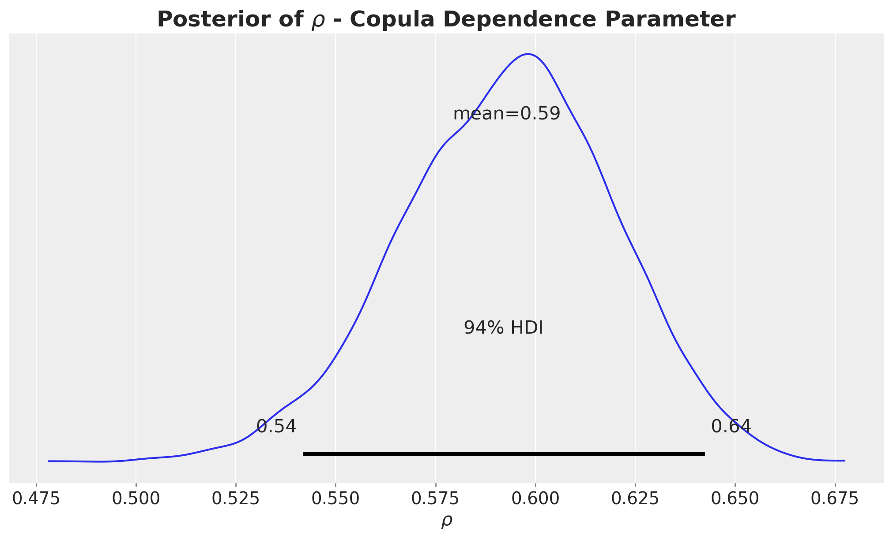
This posterior does not overlap zero, meaning that the confounder \(Z\) is associated with the outcome \(Y\) even after removing the effect of \(X\).
In the standard model, this role is played by the regression coefficient \(\beta_2\), but \(\rho\) and \(\beta_2\) encode the same information differently:
- \(\beta_2 = \rho \cdot \sigma_c\) gives the unstandardized effect of \(Z\) on \(Y\) (in the units of \(Y\) per unit of \(Z\)).
- \(\rho\) gives the standardized (correlation-scale) effect, which is unit-free. This makes it easier to set priors on \(\rho\) across different datasets and scales.
Interpreting \(\rho\) in practice:
- \(\rho = 0\) means \(Z\) has no direct association with \(Y\) beyond its effect through \(X\). There is no confounding of the \(X \to Y\) relationship by \(Z\).
- \(|\rho|\) close to \(1\) means \(Z\) almost perfectly predicts \(Y\) even after removing \(X\)’s effect: strong confounding.
- \(\rho^2\) gives the fraction of the interventional variance of \(Y\) explained by \(Z\). For example, \(\rho = 0.3\) means the confounder explains about \(9\%\) (\(= 0.3^2\)) of the interventional variance.
Let’s verify that the frugal model’s implied confounder effect (\(\rho \cdot \sigma_c\)) is consistent with the standard model’s \(\beta_2\).
ax, *_ = az.plot_forest(
[idata_standard, idata_frugal],
model_names=["Standard", "Frugal"],
var_names=["b2"],
combined=True,
figsize=(7, 5),
)
ax.axvline(
sim_params.beta_2,
color="black",
linestyle="--",
lw=2,
label=f"True beta_2 = {sim_params.beta_2}",
)
ax.set(
xlabel="Confounder effect on Y",
)
ax.set_title(
r"$\beta_2$ (standard) vs $\rho \cdot \sigma_c$ (frugal)",
fontsize=18,
fontweight="bold",
);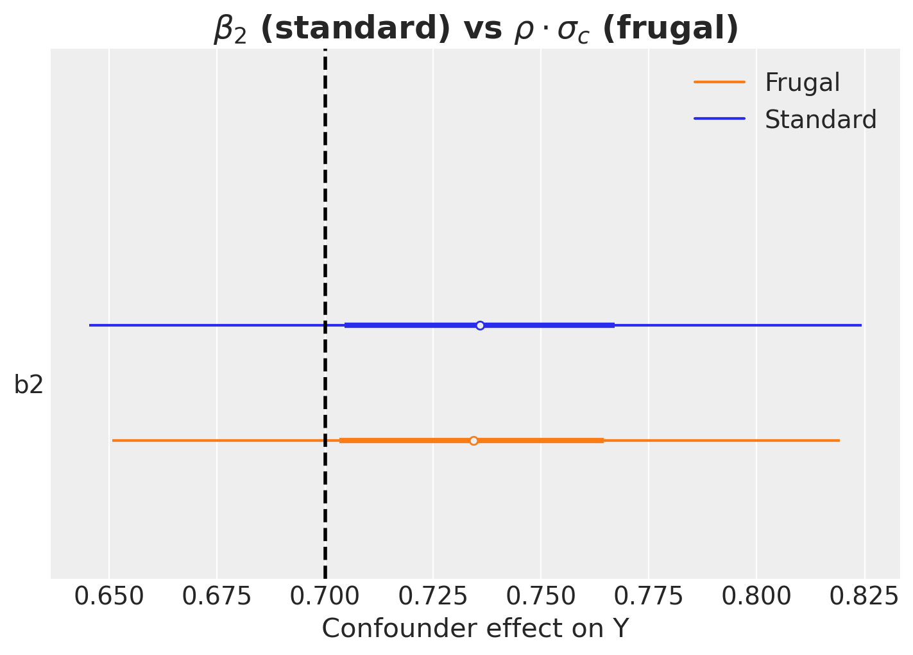
The forest plot confirms that the frugal model’s implied confounder effect (\(\rho \cdot \sigma_c\), stored as the deterministic variable b2) matches the standard model’s \(\beta_2\): they are equivalent reparameterizations in the linear Gaussian case.
Limitations and Extensions
This notebook covers the simplest possible case: continuous Gaussian outcome, binary treatment, a single confounder, and a Gaussian copula. The Evans & Didelez framework is much more general:
Discrete outcomes: Use odds ratios instead of copulas for the dependence component, in the discrete case, the frugal parameterization maps naturally onto a log-linear model.
Non-Gaussian outcomes: Use different copula families (Clayton, Frank, Gumbel, vine copulas) and/or different marginal distributions.
Continuous treatments: The ATE generalizes to a dose-response curve. The causal margin becomes \(P^*(Y \mid \text{do}(X=x))\) for continuous \(x\).
Multiple confounders: The copula extends to higher dimensions via vine copulas (pair-copula constructions), as discussed above, though parameterization becomes more complex.
References:
- Evans, R.J. & Didelez, V. (2024). Parameterizing and simulating from causal models. Journal of the Royal Statistical Society Series B, 86(3), 535–568. DOI
- Steiner, G. & Steel, M.F.J. (2024). Discussion contribution to Evans & Didelez. JRSS-B, 86(3), 580–582.
- Evans, R.J. (2023).
causl: R package for specifying, simulating from and fitting causal models. GitHub - Pearl, J. (2009). Causality: Models, Reasoning, and Inference. 2nd ed. Cambridge University Press.
- Havercroft, W.G. & Didelez, V. (2012). Simulating from marginal structural models with time-dependent confounding. Statistics in Medicine, 31(30), 4190–4206.
- Sklar, A. (1959). Fonctions de répartition à n dimensions et leurs marges. Publications de l’Institut de Statistique de l’Université de Paris, 8, 229–231.
- Wikipedia. Copula (statistics). https://en.wikipedia.org/wiki/Copula_(statistics)
Summary
| Standard | Frugal | |
|---|---|---|
| ATE is… | a derived quantity | a direct parameter |
| Priors on ATE | indirect (via regression coefficients) | direct |
| Simulation with known ATE | hard (reverse-engineer conditionals) | easy (set \(\delta\)) |
| Dependence structure | regression coefficients | copula |
| ATE as a free primitive parameter | No (derived) | Yes |
| Independent priors on causal vs. nuisance | Hard in general | Built in |
| Non-linear models | ATE is a complex function of parameters | ATE is still \(\delta\) |
The frugal parameterization does not give you a better answer in the linear Gaussian case, it gives you a better language for expressing your assumptions and incorporating prior knowledge about causal effects. The payoff grows with model complexity.
Appendix: Deriving the observational likelihood
For readers who want to understand why the conditional distribution has the form above, here is a step-by-step derivation that makes the construction explicit.
Step 1: Constructing the interventional joint distribution.
We have two marginal distributions in the interventional world (where \(X\) is set by intervention \(\text{do}(X=x)\)):
- The interventional outcome: \(Y^* \sim \text{Normal}(\mu(x), \, \sigma_c^2)\) where \(\mu(x) = \mu_0 + \delta \cdot x\).
- The confounder: \(Z \sim \text{Normal}(0, 1)\) (unchanged by the intervention, since \(Z\) is a cause of \(X\), not a consequence).
These are the marginals. To form a joint distribution of \((Y^*, Z)\), we need a dependence structure. This is exactly what the Gaussian copula provides: it couples the two marginals using a single correlation parameter \(\rho\). Because both marginals are Gaussian, the Gaussian copula produces a bivariate normal (see the copula primer above):
\[ \begin{pmatrix} Y^* \\ Z \end{pmatrix} \sim \text{MultivariateNormal}\!\left( \begin{pmatrix} \mu(x) \\ 0 \end{pmatrix}, \begin{pmatrix} \sigma_c^2 & \rho \sigma_c \\ \rho \sigma_c & 1 \end{pmatrix} \right) \]
Note that this is a construction, not a derivation from data. We are building the joint distribution from its three frugal components: the confounder distribution, the interventional outcome margin, and the copula dependence parameter \(\rho\).
Step 2: Conditioning on the confounder.
From the standard multivariate normal conditioning formula, the conditional distribution of \(Y^*\) given \(Z = z\) under intervention \(\text{do}(X=x)\) is:
\[ Y^* \mid Z=z \;\sim\; \text{Normal}\!\left( \mu(x) + \rho \sigma_c \cdot z, \;\; \sigma_c^2(1 - \rho^2) \right) \]
The mean shifts by \(\rho \sigma_c \cdot z\) (the copula-induced association with the confounder), and the variance shrinks by a factor \((1 - \rho^2)\) (the variance explained by \(Z\) is removed).
Step 3: The identification step: from interventional to observational.
This is the crucial step that connects the interventional world (where we set \(X\)) to the observational world (where \(X\) is determined by the confounder \(Z\) through the propensity model).
Under no unmeasured confounding given \(Z\) (i.e., \(Z\) blocks all back-door paths from \(X\) to \(Y\)), the interventional and observational conditionals of \(Y\) given \(X\) and \(Z\) coincide:
\[ P(Y \mid \text{do}(X=x), Z=z) = P(Y \mid X=x, Z=z) \]
In words: once we condition on the confounder \(Z\), the remaining variation in \(X\) is as-good-as-random, because conditioning on \(Z\) “blocks” the confounding path \(Y \leftarrow Z \rightarrow X\). Writing the left-hand side in the \(Y^*\) notation we have been using for the interventional outcome, this is \(P(Y^* \mid Z=z) = P(Y \mid X=x, Z=z)\) under \(\text{do}(X=x)\).
Marginalizing both sides over \(Z\) recovers the familiar back-door adjustment formula (Pearl, 2009):
\[ P(Y \mid \text{do}(X=x)) = \int P(Y \mid X=x, Z=z) \, P(Z=z) \, dz \]
Remark: cognate distributions. Evans & Didelez (2024) generalize this identification step through the concept of cognate distributions: conditional distributions of the form
\[P^*_{Y \mid X}(y \mid x) = \int P_{Y \mid ZX}(y \mid z, x) \, w(z \mid x) \, dz\]
for different weight functions \(w\). The back-door adjustment above uses \(w(z \mid x) = P(Z = z)\) (the marginal of \(Z\)), but other weight functions yield other causal estimands, for example, \(w(z \mid x) = P(Z = z \mid X = 1)\) gives the effect of treatment on the treated. Under regularity assumptions (their A2–A3), Theorem 3.1 in the paper shows that a parameterization \((\theta_{ZX},\, \theta_{Y \mid X},\, \varphi_{YZ \mid X})\) is frugal with respect to the observational kernel \(p_{Y \mid X}\) if and only if the analogous parameterization \((\theta_{ZX},\, \theta^*_{Y \mid X},\, \varphi^*_{YZ \mid X})\) is frugal with respect to the cognate kernel \(p^*_{Y \mid X}\). That equivalence is what lets the framework move cleanly between different causal estimands.
Therefore, the distribution derived in Step 2 is exactly the observational likelihood we need for Bayesian inference:
\[ Y \mid X=x, Z=z \;\sim\; \text{Normal}\!\left( (\mu_0 + \delta \cdot x) + \rho \sigma_c \cdot z, \;\; \sigma_c^2 (1 - \rho^2) \right) \]
Step 4: The role of the propensity score.
Notice that the propensity model \(P(X \mid Z)\) does not appear in the outcome likelihood above, it enters the model separately through the Bernoulli distribution for \(X\). This is not a coincidence: it is a direct consequence of the variation independence of the frugal components. The propensity parameters \((\alpha_0, \alpha_1)\) and the causal/dependence parameters \((\delta, \sigma_c, \rho)\) live in separate, non-overlapping parts of the model, so we can specify priors on them independently.
Step 5: Connection to the standard parameterization.
We can now make the equivalence between the two parameterizations explicit. Matching coefficients between the frugal likelihood \(Y \mid X, Z \sim \text{Normal}((\mu_0 + \delta x) + \rho \sigma_c z, \; \sigma_c^2(1 - \rho^2))\) and the standard regression \(Y \mid X, Z \sim \text{Normal}(\beta_0 + \beta_1 x + \beta_2 z, \; \sigma^2)\):
Forward mapping (frugal \(\to\) standard):
\[ \beta_0 = \mu_0, \quad \beta_1 = \delta, \quad \beta_2 = \rho \sigma_c, \quad \sigma = \sigma_c \sqrt{1 - \rho^2} \]
Inverse mapping (standard \(\to\) frugal):
\[ \delta = \beta_1, \quad \sigma_c = \sqrt{\sigma^2 + \beta_2^2}, \quad \rho = \frac{\beta_2}{\sqrt{\sigma^2 + \beta_2^2}} \]
All of these closed forms assume the standardization \(\operatorname{Var}(Z) = 1\) used throughout the post. With a general \(\operatorname{Var}(Z) = \sigma_z^2\), the formulas carry an extra factor of \(\sigma_z\): \(\beta_2 = \rho \sigma_c / \sigma_z\) and \(\sigma_c^2 = \sigma^2 + \beta_2^2 \sigma_z^2\).
The inverse mapping reveals an important insight: the causal standard deviation \(\sigma_c = \sqrt{\sigma^2 + \beta_2^2}\) is always larger than the residual standard deviation \(\sigma\) (unless \(\beta_2 = 0\), i.e., no confounding). The two quantities live in different “worlds”: \(\sigma_c^2 = \operatorname{Var}(Y^* \mid \text{do}(X = x))\) is the marginal variance of the outcome under intervention (averaging over \(Z\)), while \(\sigma^2 = \operatorname{Var}(Y \mid X = x, Z = z)\) is the conditional residual variance in the observational world (already conditioning on \(Z\)). The causal margin averages over the confounder while the observational residual conditions on it, so the causal margin necessarily picks up the additional variability \(\beta_2^2 \cdot \operatorname{Var}(Z)\) contributed by \(Z\).